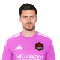
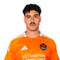
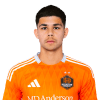
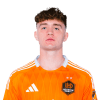
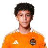

Here for the vibe, not the score. 🫖✨
May 2 • vs Colorado Rapids • Shell Energy Stadium • 5:30 PM CT
Lawrence and Preslee just posted a pitch-side couples photo 💕, Ponce scored the 101st-minute Open Cup winner Wednesday night 😱, and Sviatchenko literally saved the entire cup run with an 89th-minute header off a Héctor Herrera assist. Three weeks ago Colorado put SIX past them at DSGP — tonight the Dynamo get to answer that on HOME SOIL. Oh, and it's Lucas Halter's birthday. 🎂🧡
The ones with the biggest stories this week. Start here.
🇩🇪 Born in Berlin. German-Algerian. One of the fastest players in all of MLS — literally. Tore his knee scoring his first MLS goal in 2024, came back and was named a Comeback Player of the Year finalist. He just posted a pitch-side photo with Preslee after the San Diego win — captioned "Lawrence Ennali Hallelujah!!! 🧡" We love a man who posts his girl after a W. 📸🔥
🇦🇷 From Rosario, Argentina — same city as Messi. This man has played on FOUR continents (Roma, Granada, Spartak Moscow, AEK Athens). People doubted him early this season. Then Wednesday night he scored the 101st-minute extra-time winner to send Houston to the Open Cup Quarterfinal. 😱🔥 One-hundred-and-one minutes. The man is CLUTCH. Now he heads to Denver with all that momentum.
🇲🇽 Mexican international LEGEND. Captained Porto. Played at Atlético Madrid. 1M+ Instagram followers. Scored on his 36th birthday at Orlando on April 18 🎂⚽ Then Wednesday night he delivered the assist on Sviatchenko's 89th-minute equalizer that saved the entire Open Cup run. 36 and still doing it at the highest level.
Artur on Herrera after the Louisville match: "He and I are great friends on and off the field. Happy to play with him again. He still plays at a high level." Club legend, beloved teammate. The elder statesman energy is real. 🧡
Big energy. Big moments. The names you'll hear the most.
🇧🇷 From São Paulo. Captained Santos FC — Pelé's club. Played alongside Neymar. Neymar has publicly praised him. 443K Instagram followers — biggest social presence on the entire squad. 📱👑 He's on a 20-goal pace this season — first Dynamo player to hit 9 goal contributions in his first 7 MLS matches since Brian Ching in 2006. But here's the thing: he was on the field when Colorado put 6 past them three weeks ago. This is his revenge game. 😤🔥
🇩🇰 Danish-Ukrainian defender from Viborg, Denmark. Played for Celtic in Scotland. Wednesday night, 89th minute, the cup run is about to end — and this man heads home Herrera's cross to force extra time. Without that goal, there IS no Open Cup quarterfinal. The savior. 🦸♂️⚽
Off the pitch? Houston's most fashionable human. His father Sergei Sviatchenko is a Ukrainian-Danish art and fashion icon who created the photo blog Close Up and Private — the project that revolutionized men's fashion photography. Erik grew up modeling in front of his dad's camera. He posts pregame fits. He's the only player in MLS with a Vogue-adjacent dad. 📸🎨
🇵🇱 Polish international from Ruda Śląska. Went from LAFC → Cruz Azul in Mexico → Houston. Won the CONCACAF Champions League. One of the biggest transfers in club history. Creates chances like it's his job (it literally is). 🎯✨
🇨🇿 Czech midfielder from Havířov. Quiet and consistent — does his job and goes home. Came from Slavia Prague. The steady hand in midfield. 🤝
Passports on passports. These guys have seen the WORLD.
🇧🇷 Full name: José Artur de Lima Junior. Brazilian midfielder who anchors the middle of the park. Previously at Columbus Crew. Said about Héctor Herrera: "Happy to play with him again. He still plays at a high level." Hype man energy. 🙌
🇧🇷 Brazilian center back. Big, strong, experienced. The anchor at the back. Joined Houston in 2025. Two daughters: Antonia and Alice. Girl dad energy all day. 🥹👧👧
🇲🇱 From Mali. Defensive midfielder — the one who does the dirty work so the attackers can shine. Previously in the Austrian Bundesliga and Bundesliga. International cap holder for Mali. Quietly one of the most experienced guys on the roster. 💪🌍
🇳🇬 From Kano, Nigeria. Speedy winger who brings flair and chaos to the attack. Has a TikTok AND Instagram — social media presence is real. 📱🔥 One of the most fun players to watch when he's on the ball.
🇦🇷 Argentine midfielder. IG handle is @chiquibouzat — yes, "Chiqui" is the nickname. Came from Vélez Sársfield. Solid in midfield, keeps things ticking. 🎶⚽
🇦🇷 Argentine left back who grew up in Mendoza, then moved to Tierra del Fuego at age 14 when his family relocated. His youth team there? Los Cuervos del Fin del Mundo — "The Crows From the End of the World." 🐦⬛ Yes, that's a real team name. From the literal bottom of the globe to MLS. Steady, reliable, does his job. 🏃♂️💨
Married. Kids. Date night is a Tuesday game. Wholesome content only.
🇺🇸🏴 Born in Columbus, GA, moved to England at age 2. Spent years in the English Football League (Huddersfield, Derby County, Preston). Came to Houston in 2025. American by birth, English by upbringing. Best of both worlds. 🌍
🇺🇸 From Colorado Springs, Colorado. Joined the Colorado Rapids Academy at age 13. Spent TWO stints with the club — 116 total appearances. Then on February 21, 2026, Colorado waived him. Houston scooped him up March 20. Tonight he plays his former club — on Houston's pitch, in Houston orange — for the first time. 😤 USMNT international. Newlywed energy. 💒✨ The childhood-sweetheart-of-a-club just got dumped, signed with the rival, and is back to make eye contact across the pitch.

🏴🏴 English goalkeeper. The reliable #31 between the posts. Calm, collected, does his job. 🧤 While Jonathan is stopping shots at Shell Energy, his partner is on Amazon Prime competing for $5 MILLION.

🇧🇷🇧🇷 From Salto, São Paulo. His dad is a PE teacher who pushed his soccer career from a young age — Globo TV actually did a family feature on it. Was captain of EC Vitória before coming to Houston. Signed through 2029-30 — they're betting BIG on this guy. 🏰
Missed tonight with a lower-body injury — but it's his birthday today (May 2)! 🎂 The whole team is celebrating without him on the pitch. And in April, he and Héctor Herrera met Peso Pluma. The Dynamo is collecting celebrity friends. 🎤🧡

🇺🇸🇺🇸🇵🇭 From Bourbonnais, IL. Filipino heritage on his mom's side. Won 2024 USL Championship Player of the Year after scoring 28 goals. Twenty-eight. Now on loan at Houston from CD Castellón. The man can finish. 🎯🔥
Oh — and he has a twin brother. Anthony Markanich plays defender for Minnesota United FC. Twins on rival MLS teams. The family kept a literal preseason scoresheet — Anthony led 1-0 in 2025. When Houston plays Minnesota, it becomes a family affair. 👯♂️
Academy kids, homegrowns, and the next generation. They're just getting started.

🇺🇸🇺🇸☘️ From Middle Village, Queens, New York. Irish-American — dad Paul (Irish-born) runs the Blau Weiss Gottschee Academy in Queens where both Jack and his older brother Conor trained. Jack chose USA over Ireland for international duty. Dynamic left-footed midfielder. USMNT regular at just 22. The boy from Queens is building something big. 🌟
The Philly exit? Cold. He found out about his $2.1M trade to Houston — the first-ever cash-for-Homegrown deal in MLS history — from his dad while he was with his girlfriend. His quote: "Tactically it made sense, but handled poorly... no respect." 🥶
Older brother Conor McGlynn plays USL League One for Westchester SC. They've faced off before. Brothers Across the Pyramid. ⚽⚽

🇺🇸🇺🇸 Houston's own. Homegrown player who came up through the Dynamo academy. Creative and technical midfielder. Living every local kid's dream — playing pro for the hometown club. 🏡➡️⚽
🇺🇸 From Missouri City, TX. Another Houston-area homegrown kid. Came up through the academy, earned his spot on the first team. Texas raised, Texas made. 🤘
The full crew. Keepers, depth guys, the ones who show up every day.
🇺🇸 From Lawrenceville, GA. The OG. 37 years old and still guarding the net. Spent 8 seasons at FC Dallas before joining Houston. Veteran energy — the wise uncle of the squad. 🧓⚽ Coming back from a concussion — might be available today.
🇺🇸 From San Jose, CA. Backup keeper ready to make clutch saves when called upon. Came up through the SuperDraft. Bay Area kid now living that Houston life. 🌉➡️🤠
🇺🇸 From Humble, TX. Literally humble. Homegrown keeper who came up through the Dynamo academy. Signed his first contract in December 2025. Local kid, living the dream. 🏡⚽
🇦🇷 From Arata — a tiny town in La Pampa province that no one's heard of. 6'6" — yes you read that right. Towering center back. Nobody's getting a header over this man. 🏔️😤
Oh, and he has a Business Finance degree from Seton Hall. BIG EAST All-Academic Team. Scholar All-America honors. The 6'6" finance major from the end of the Argentine pampas. The dad-energy starter. 🧠💼
🇧🇷 From Boa Viagem, Brazil. Young Brazilian defender still establishing himself. Reliable when called upon. The quiet grind. 💪🤫
The Colorado Rapids players you need to know about — especially after what happened last time. 😤
🇺🇸 From Medford, NJ. You might know his big brother — Brenden Aaronson at Leeds United. Paxten is Colorado's biggest-ever signing at $7M. USMNT international at 22. Already scored a brace vs LAFC. Same family, different league, same star power. ⭐👀
🇧🇷 Brazilian DP forward. 7 goals on the season. Scored TWICE vs Houston on April 11 during that 6-2 nightmare. Just turned 25. 11 goal contributions in his last 9 matches. He's the player Houston has to solve tonight or it's going to be a long night. 😬🔥
First week of training. First MLS start. TWO goals. Against Houston. On April 11, this man introduced himself to MLS by torching the Dynamo in his debut. He'd been with the team for less than a week. If you were at the 6-2 game, you already know his name. If you weren't — now you do. 😤🔥